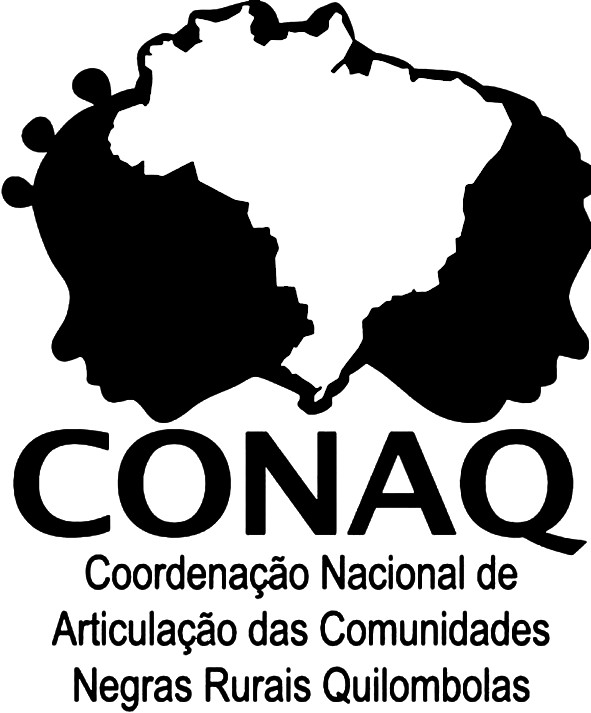

Pesquisa "Panorama da Educação Escolar Quilombola no país" – Dados colaborativos, atualização em tempo real, cruzamentos dinâmicos e transparência pública.

| Selecione linhas e colunas | |
|---|---|
| Clique em "Gerar tabela" | |
| Comunidade | UF | Perfil | Relato | Sugestões |
|---|---|---|---|---|
| Carregando... | ||||